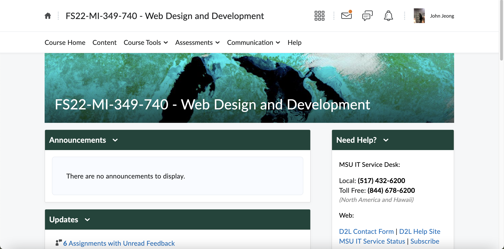

Why You Should Take MI 349
| Number |
Reasoning |
Importance |
| 1 |
Good Introduction to Web Development |
Fairly Important |
| 2 |
Learning about HTML and CSS |
Very Important |
| 3 |
Help from Mentor/Professor |
Very Important |
The picture of MI 349 D2L course.
MI 349 is the introductory course for Web Development at Michigan State University. It teaches you the basics of Web Development so that you can be ready for the future. It is a great course to take if you’re interested in Web Development! There are multiple reasons that I would recommend this class to my fellow students. First, this class introduces you to the right track for learning Web Development. It’s always hard to teach yourself how to create a website, but this course can help you step by step on how to create your website. Also, you can always get assistance from the professor whenever you have issues with your HTML or CSS file. Having a mentor/helper is always helpful while you are developing, and MI 349 class allows you to have your professor as your mentor! Lastly, this class has multiple quizzes and labs that can enhance your web development skills. You will be challenged a lot of times because you will require critical thinking and creativity in this class, but it will also be a great experience that will get you ready for the future! Overall, I recommend this class if you’re trying to get into the Web Development field. It will be challenging, but you will learn so many basics!
Why MSU Campus is One of The Best Campuses in the World
| Number |
Reasoning |
Importance |
| 1 |
Big Size |
Fairly Important |
| 2 |
Environmentally Friendly |
Very Important |
| 3 |
Big River Crossing the Campus |
Fairly Important |
The picture of MSU Campus from the sky.
Michigan State University has a beautiful campus, and I would like to talk about why the MSU campus is one of the best campuses in the world. First of all, the MSU campus is one of the biggest campuses in the world by size. MSU campus is about 5,239 acres and it is the 8th biggest campus in the United States. If this doesn’t explain how big the campus is, it takes a couple of hours to walk around the entire campus, or even more! Also, the MSU campus is environmentally friendly. If you ever walked through the campus, you could easily see squirrels and wild animals roaming around. There are also a lot of trees and bushes on the campus. Probably more than you can even imagine! Finally, Red Cedar is a highlight of the MSU campus. Red Cedar River crosses the campus, and you can walk through the trails while the river is flowing right next to you. There are benches you can sit down and just relax while you can see and listen to the river flowing. MSU campus is always full of students walking around going to classes, exercising, or just strolling. I can proudly say that the MSU campus is one of the best campuses in the world!